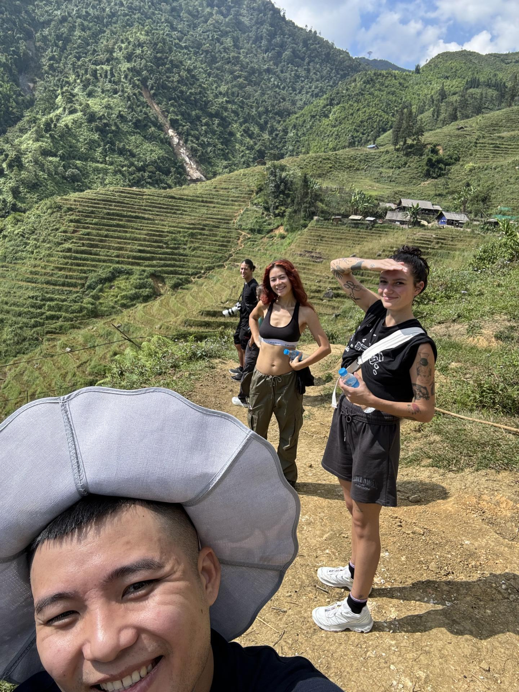
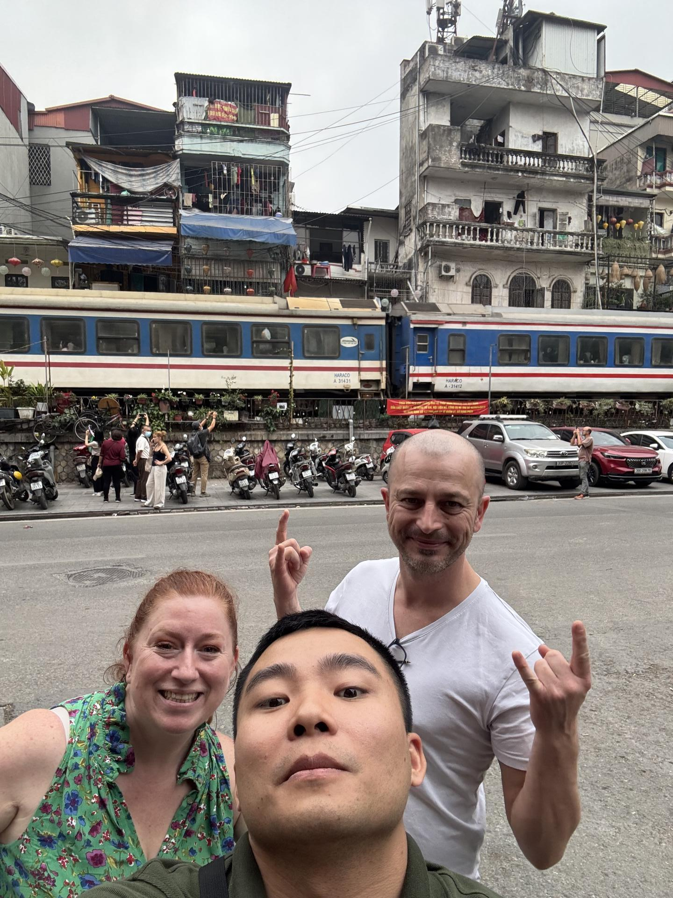
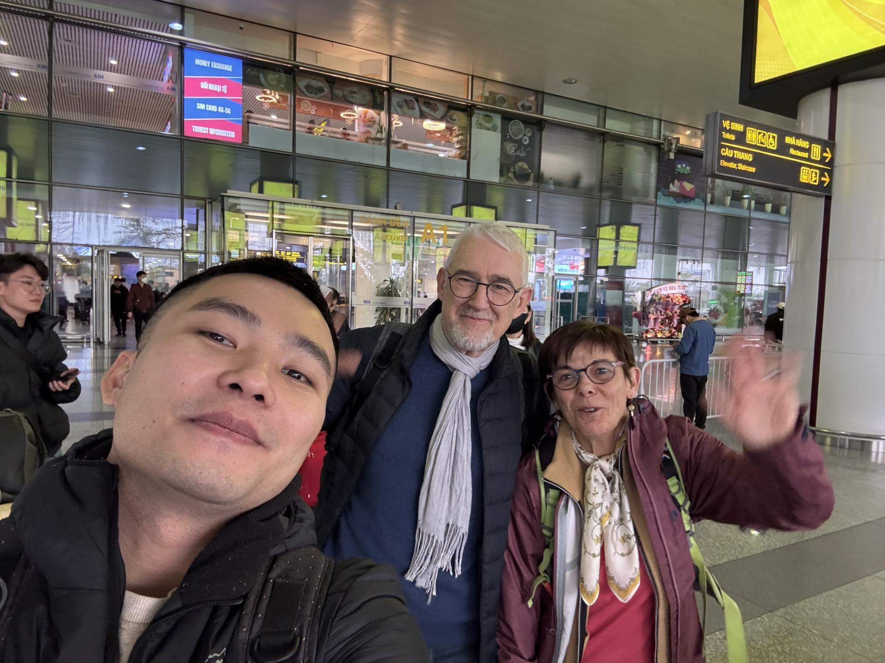
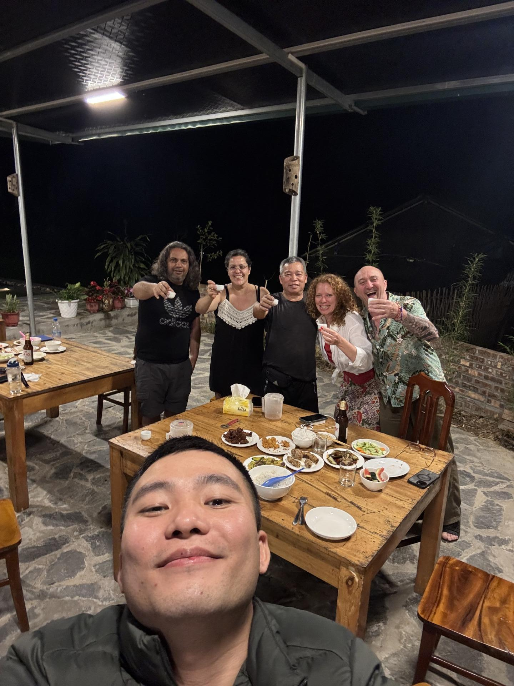
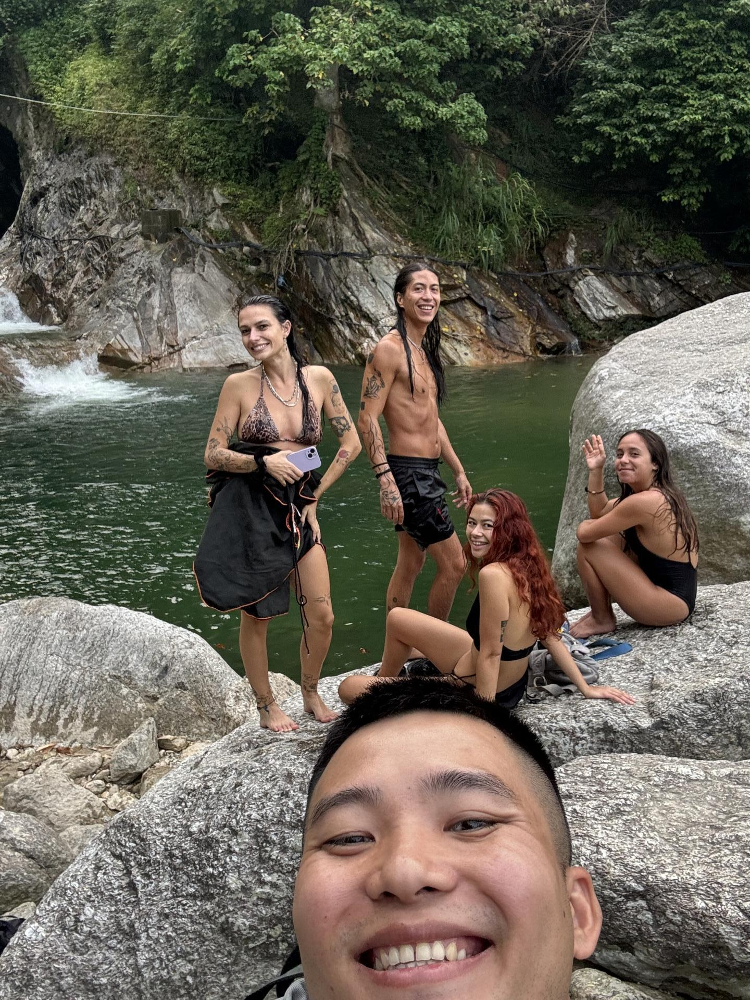
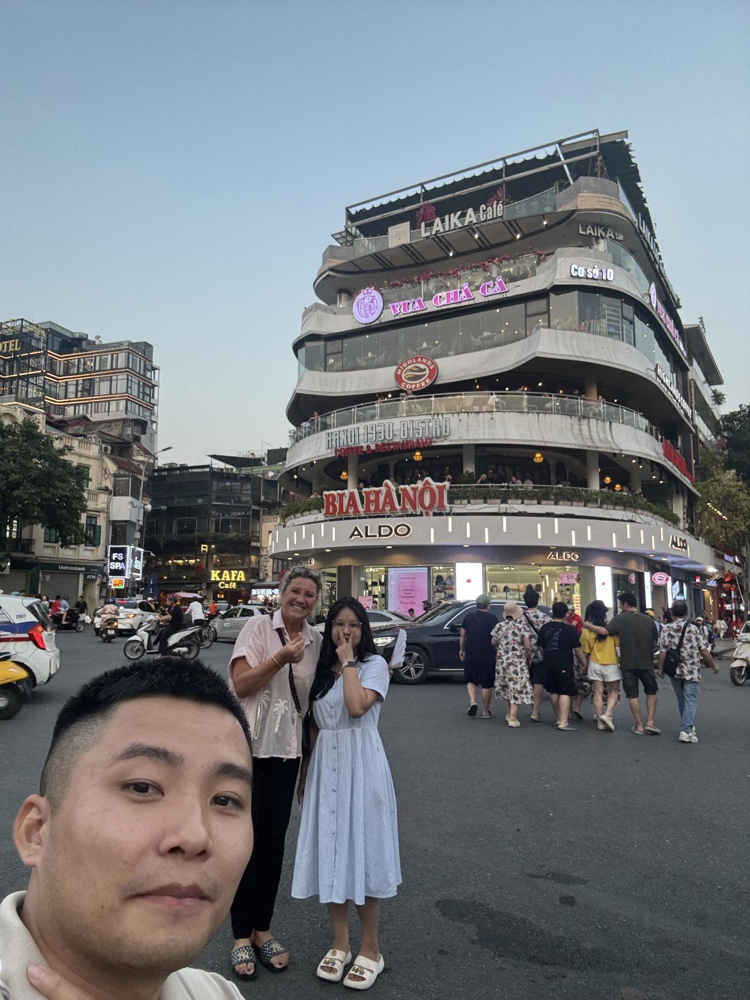

Incontournables Vietnam
30+ choses à faire à Hanoï
Que faire à Hanoï ? Découvrez avec Joseph les 30+ incontournables à voir à Hanoï : monuments, temples, musées, quartiers et excursions autour de la capitale.
Lire l’articleGuide francophone · Hanoï & Vietnam
Rencontres, culture et voyages sur mesure avec guide francophone Vietnam Joseph.
Quelques moments partagés avec les voyageurs d’Avec Jo.






Joseph, guide francophone au Vietnam basé à Hanoï, échange avec vous pour préparer vos visites et votre parcours dans le nord.
Incontournables Vietnam
Que faire à Hanoï ? Découvrez avec Joseph les 30+ incontournables à voir à Hanoï : monuments, temples, musées, quartiers et excursions autour de la capitale.
Lire l’article